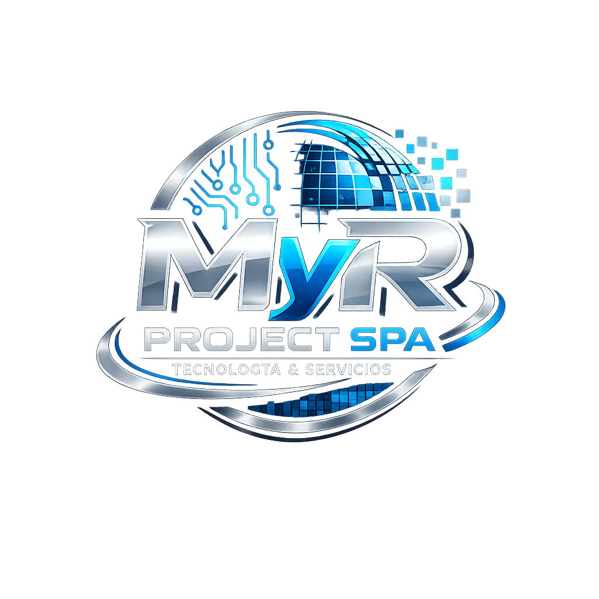

Consultoría Informática
Asesoría tecnológica para optimizar procesos empresariales.

Soluciones tecnológicas, ingeniería y soporte empresarial
En MyR Project SpA ofrecemos soluciones tecnológicas innovadoras, soporte informático y servicios especializados para optimizar los procesos de pequeñas, medianas y grandes empresas.
Conoce nuestros serviciosMyR Project SpA es una empresa orientada a brindar soluciones tecnológicas innovadoras para organizaciones que buscan optimizar sus procesos mediante el uso de herramientas digitales, infraestructura informática y soporte especializado.
Nuestro objetivo es acompañar a las empresas en su transformación digital, entregando servicios confiables, eficientes y adaptados a las necesidades de cada cliente.
Ofrecemos soluciones tecnológicas diseñadas para optimizar los procesos y mejorar la productividad de nuestros clientes.
Asesoría tecnológica para optimizar procesos empresariales.
Mantenimiento, diagnóstico y solución de problemas informáticos.
Implementación y administración de redes, equipos y sistemas tecnológicos.
Reparación de computadores, notebooks y equipos periféricos.
Diseño e implementación de redes y equipamiento tecnológico para empresas en proceso de modernización.
Soporte técnico especializado para usuarios y estaciones de trabajo.
Optimización de procesos mediante herramientas tecnológicas y soluciones digitales.
Aplicamos soluciones tecnológicas modernas adaptadas a cada cliente.
Contamos con personal capacitado para responder a los requerimientos tecnológicos de las organizaciones.
Diseñamos servicios de acuerdo con las necesidades específicas de cada empresa.